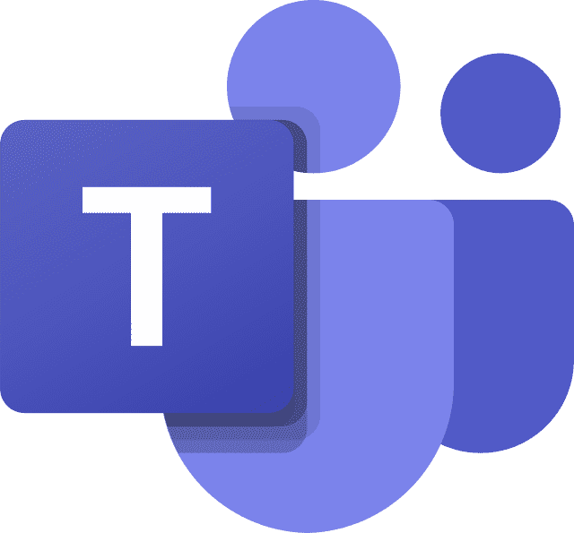
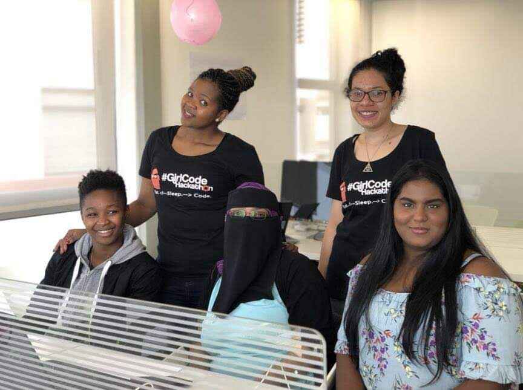
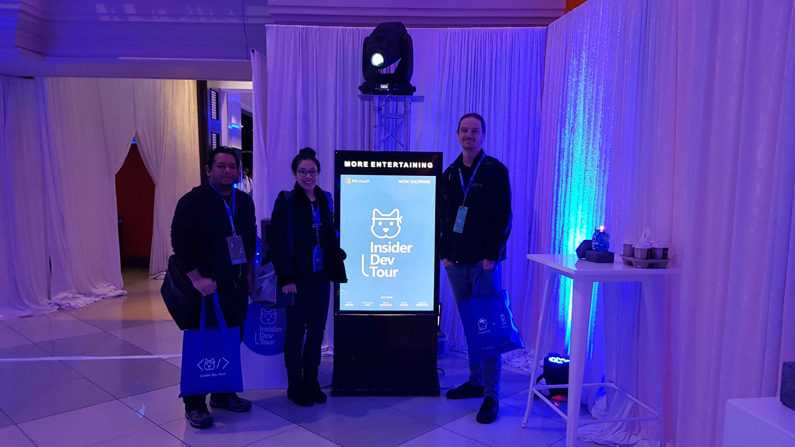
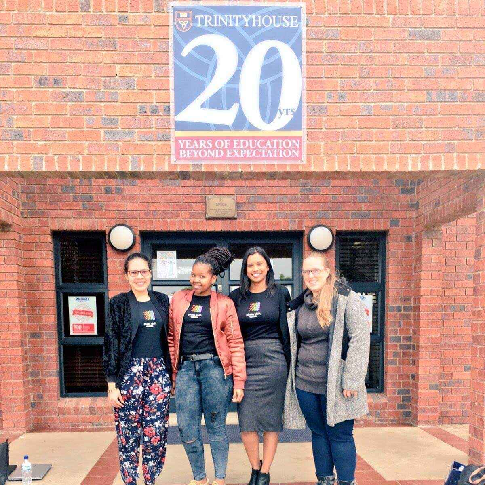
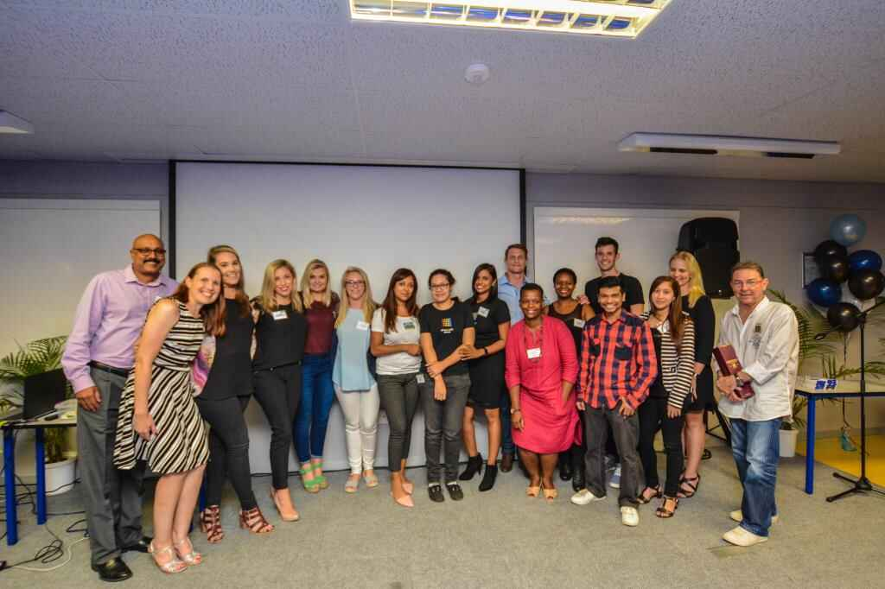
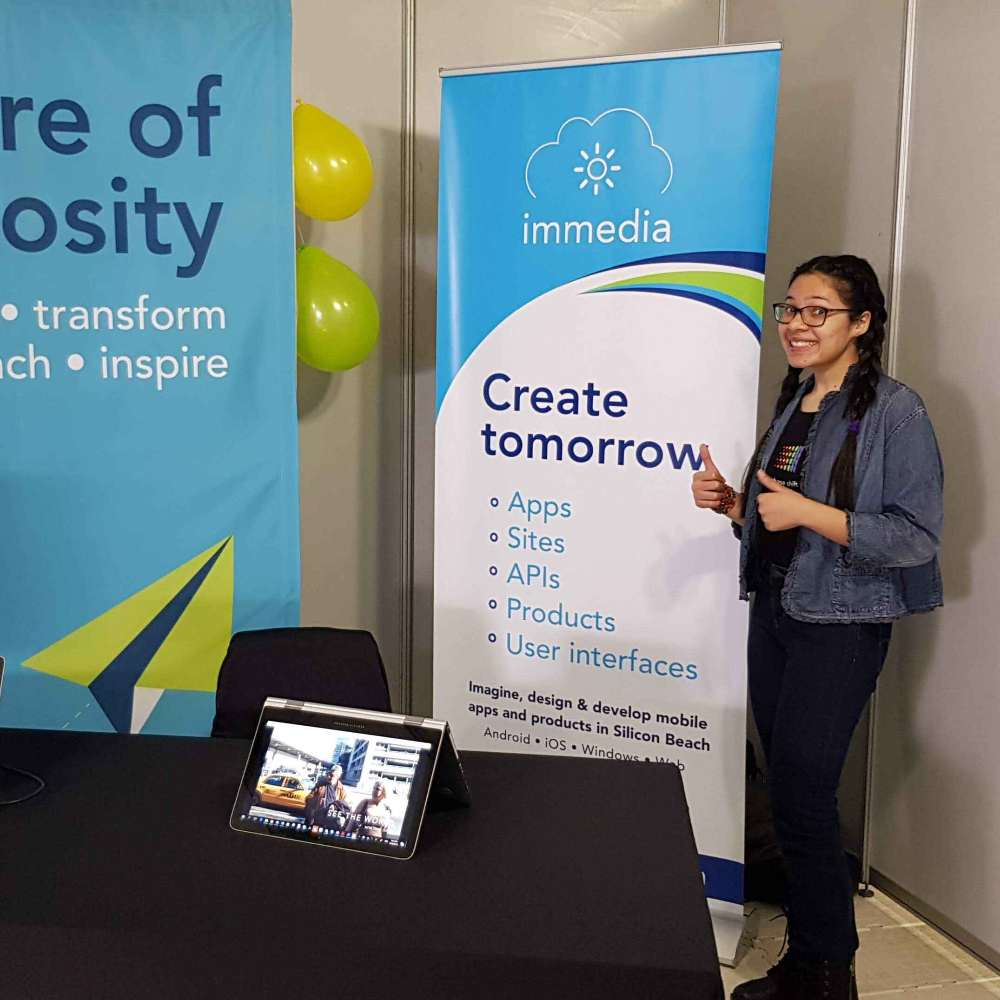
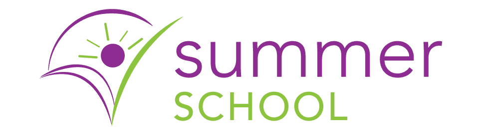

Project 01
Thin Walls
A platform designed to help people better understand the realities of sound in multi-dwelling environments such as apartments, townhouses, hotels, and student accommodation.
Hello, I’m Margaret.
I’m a full-stack software developer based in Cape Town, South Africa. I build thoughtful tools and experiments that bring together code, language, and human curiosity.
I enjoy the art of creation as well as puzzle solving - creating software allows me to enjoy both.
Originally from Durban, I found software development in high school and went on to study it formally, graduating with distinctions. I began my professional path in Durban at immedia before I moved to Cape Town to work at Flash. Much of my experience sits in the Microsoft world, but I prefer to think beyond a single language or stack: understand the problem, the people, and the constraints, then choose the tools that fit.
These days, while still based in Cape Town, my curiosity also reaches into writing, prompt design, and AI experimentation. I’m especially drawn to building things that help people think, create, remember, or reflect. I work iteratively, with plenty of questions and the occasional conversation with a rubber duck.
A collection of experiments, practical tools, and ideas made tangible. Each one began with a question worth following.
A platform designed to help people better understand the realities of sound in multi-dwelling environments such as apartments, townhouses, hotels, and student accommodation.
A community for developers to mingle, mentor, and build software together, open to everyone from students to CTOs, with activity across GitHub, Discord, and YouTube.
Lightweight awards ceremonies for software repositories. Part morale boost, part code archaeology, part developer theatre.
A custom GPT that acts as a clipboard and recall tool for terminal commands, backed by a curated command knowledge base.
A reflective AI project exploring personal growth, patterns, and memory through exported conversations.
An AI-powered interactive experience that helps you feel connected to the wider world through the names you carry.
Moments that shaped how I work with people, communities, and the wider technology ecosystem.

February 2022
Helped build and launch the Microsoft Teams communication space for the Flash Observatory office. Within two months, the team grew organically to 70% of office staff, with an A+ retention level.
View on LinkedIn
August 2018
Helped plan and host GirlCode's Durban hackathon at immedia, bringing developers together for a weekend of building, learning, and collaboration.

June 2018
Attended the Insider Dev Tour in Johannesburg to learn about Progressive Web Apps, Microsoft Graph, Mixed Reality, and other emerging developer tools.



2017-2018
Joined colleagues on visits to schools, colleges, and career events to share what life in the technology industry can look like, including Trinityhouse High School, Masakhane Girls Secondary School, Varsity College Durban North, and DUT World of Work.

December 2015
Took part in immedia's five-day Summer School programme, gaining early exposure to post-PC software, product thinking, and the working rhythm of a technology company.
View my blogNotes in progress
I’m always happy to connect with curious people and thoughtful builders. You can find me here: